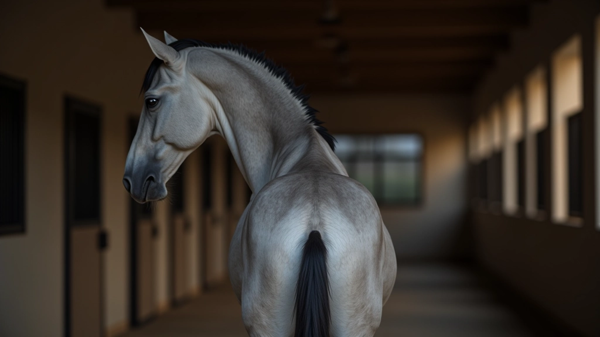
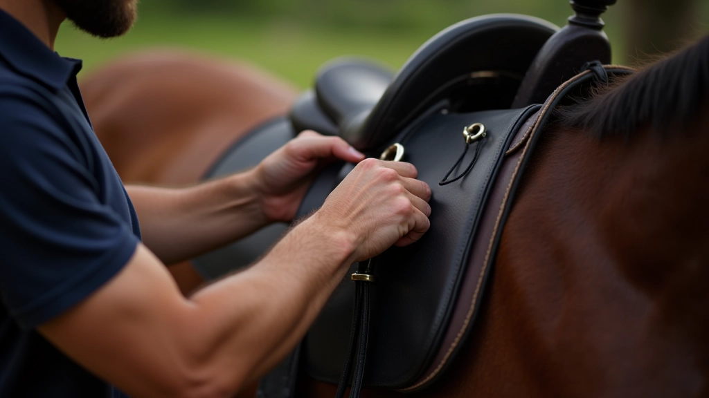
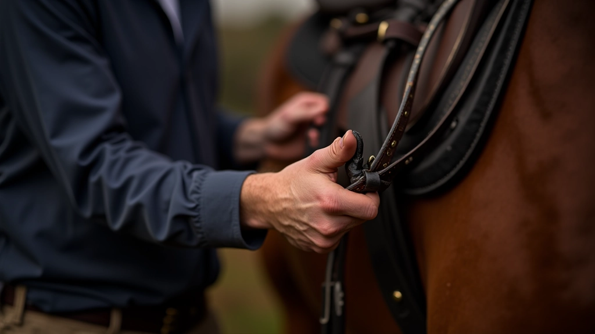
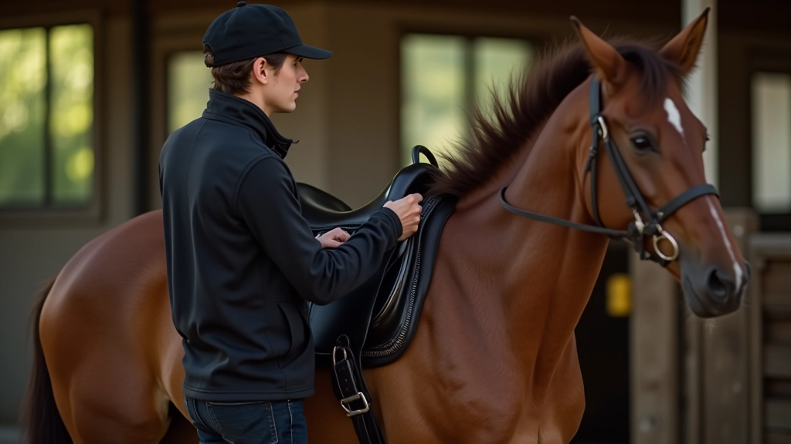
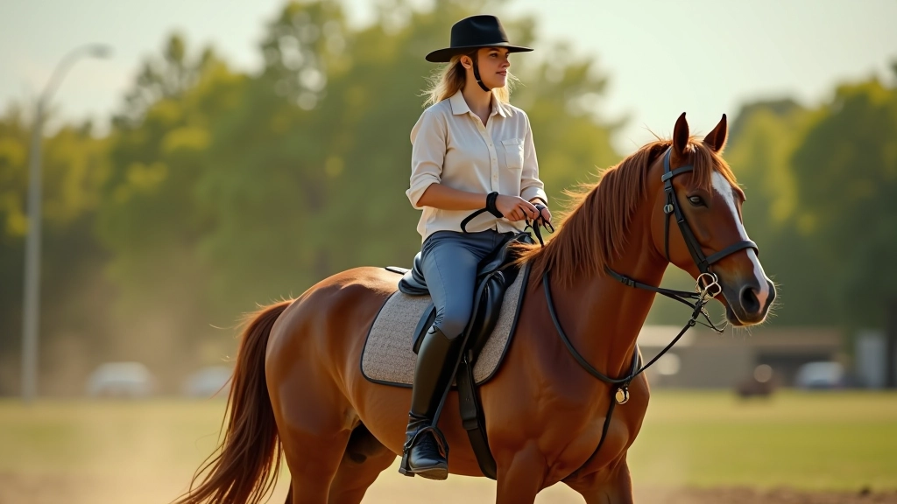

خطوات تنظيف الحصان بشكل صحيح
تعرف على الطريقة الصحيحة لتنظيف الحصان يومياً...
اتعلم كيفية وضع السرج بطريقة آمنة وصحيحة على ظهر الحصان لضمان راحته وسلامة الفارس. هذا الدليل يشرح كل خطوة بالتفصيل، من التحضيرات الأساسية إلى التأكد من الملاءمة المثالية.
سبتمبر 2026

السرج ليس مجرد قطعة معدات. إنه الوسيط بينك وبين حصانك، وتركيبه الصحيح يؤثر على الراحة والأداء والسلامة. حصان غير مريح سيكون متوتراً وصعب التعامل معه. في المقابل، السرج المثبت بشكل صحيح يسمح للحصان بالتحرك بحرية طبيعية.
نحن سنغطي كل ما تحتاج معرفته، من اختيار السرج المناسب لحصانك إلى التحقق من أنه متوازن ومستقر. لا تقلق إن كنت مبتدئاً — هذه الخطوات بسيطة وسهلة المتابعة.
تركيب آمن يحمي الحصان والفارس من الإصابات
حصان مريح يعطيك أداء أفضل وسلوك هادئ
التركيب الصحيح يقلل الضغط الزائد ويحافظ على السرج
قبل أن تضع السرج، تأكد من أن الحصان نظيف وجاف. الأوساخ والعرق تحت السرج تسبب عدم الراحة والتهيج. استخدم فرشاة ناعمة لتنظيف ظهر الحصان جيداً، خاصة في المنطقة حيث سيجلس السرج.
افحص السرج أيضاً. تأكد من عدم وجود شقوق أو تضررات في الجلد. اغسل البطانة الداخلية بقطعة قماش رطبة إن لزم الأمر. السرج النظيف والحصان النظيف هما البداية الصحيحة.
نظف ظهر الحصان بفرشاة ناعمة من الأمام للخلف
تأكد من جفاف الحصان تماماً قبل البدء
افحص حالة السرج والبطانة الداخلية


السرج يجب أن يُوضع في المكان الصحيح على ظهر الحصان. الموضع المثالي هو خلف كتفي الحصان مباشرة، على المنطقة المسطحة من الظهر. لا تضع السرج أبداً على الكتفين أو على عظام العمود الفقري.
كيف تتحقق من الموضع الصحيح؟ ضع يدك تحت مقدمة السرج. يجب أن تكون هناك مسافة صغيرة بين السرج وكتف الحصان — حوالي إصبعين من المسافة. هذا يسمح للحصان بحرية الحركة الطبيعية في الأمام.
الحزام هو العنصر الحاسم في تثبيت السرج. يجب أن يكون محكماً بما يكفي لمنع السرج من الانزلاق، لكن ليس بضيق يسبب عدم الراحة للحصان. ربط الحزام بشكل خاطئ هو أحد أكثر الأخطاء الشائعة.
ابدأ برفع الحزام من الجانب الأيسر ومرره تحت بطن الحصان. لا تربطه بقوة شديدة في البداية. اترك مسافة تقريباً عرض إصبع واحد بين الحزام وبطن الحصان. بعد ركوب الحصان لدقائق قليلة، قد تحتاج لشد الحزام أكثر قليلاً، لكن ابدأ بشكل معتدل دائماً.
نصيحة مهمة: اختبر الحزام بإدخال إصبعك تحته. إذا كنت تستطيع إدخال إصبع واحد فقط بصعوبة، فهو محكم بشكل صحيح. إذا استطعت إدخال إصبعين بسهولة، فهو رخو جداً.


قبل أن تركب الحصان، تحقق من أن السرج متوازن تماماً. امشِ حول الحصان وانظر إليه من الجانب والخلف. السرج يجب أن يكون مستقيماً، وليس مائلاً لأحد الجانبين.
اختبر الملاءمة من خلال الضغط برفق على أعلى السرج. يجب أن يكون مستقراً وثابتاً. إذا كان يتحرك أو يتمايل، فقد تحتاج لإعادة ربط الحزام. أيضاً، تأكد من أن البطانة الداخلية للسرج ملتصقة بشكل جيد بظهر الحصان — لا توجد فراغات كبيرة.
بعد أن تبدأ الركوب، قد تحتاج لتعديلات صغيرة. الحصان سيتحرك والسرج قد يتغير موضعه قليلاً. بعد 10-15 دقيقة من الركوب، توقف واختبر الحزام مرة أخرى. قد تحتاج لشده أكثر قليلاً عندما يتحرك الحصان.
لا تتردد في طلب المساعدة من مدرب أو شخص أكثر خبرة. التركيب الصحيح للسرج مهارة، وتعلمها من شخص ذو خبرة يوفر عليك الوقت والأخطاء. الحصان سيشكرك على العناية والاهتمام.
تذكر: السرج الصحيح يعني حصان سعيد وفارس آمن. لا تتسرع في هذه الخطوات — الوقت المستثمر الآن يعني تجربة ركوب أفضل وأطول.

تركيب السرج بشكل صحيح أسهل مما تتوقع. المفتاح هو الانتباه للتفاصيل الصغيرة — نظافة الحصان، الموضع الصحيح، ربط الحزام بشكل معتدل، والتحقق من التوازن. هذه الخطوات الخمس البسيطة ستضمن أن حصانك مريح وآمن.
كلما تدربت على هذه العملية، كلما أصبحت أسرع وأسهل. في البداية، قد تأخذ 10-15 دقيقة. لكن بعد بضعة أسابيع، ستكون قادراً على فعلها بسرعة وثقة. والأهم — حصانك سيكون أكثر سعادة وراحة.

الكاتب
فريق التحرير والمحتوى
كتبه فريق الإسطبل الذهبي التحريري، متخصص في تقديم إرشادات عملية وسهلة المتابعة حول رعاية الخيول.
هذا الدليل مقدم لأغراض تعليمية وإرشادية. كل حصان فريد، وقد تختلف احتياجات السرج من حصان لآخر. نوصيك بطلب المساعدة من متخصص في تركيب السرج أو مدرب خيل ذو خبرة عند البدء، خاصة إذا كنت مبتدئاً. سلامتك وسلامة حصانك هي الأولوية الأساسية. المعلومات الواردة هنا تعتمد على الممارسات العامة، وقد تختلف الظروف الفردية.